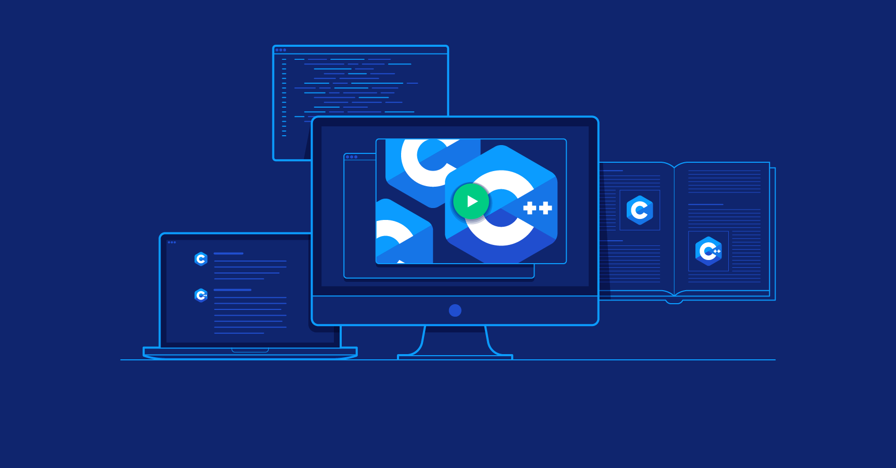

Prima dată când am luat contact direct cu programarea, a fost exact în prima zi din clasa
a IX-a. Eram extrem de încântat că intrasem la un liceu de informatică și deja visam cu ochii deschși,
la fel ca orice tânăr de 14 ani, ce jocuri voi ajunge să dezvolt cu toate noțiunile pe care le voi asimila
până prin clasa a XI-a.
Lucrurile au luat atunci o turnură neașteptată, întrucât programarea la care eu visam și pe
care credeam că o voi studia în liceu nu era deloc aceeași cu ceea ce făceam de fapt. Am început studiul
informaticii cu bătrânul limbaj Pascal, care a fost și motivul
pentru care am început să iubesc informatica și, implicit, programarea.
Deși la început lucrurile erau foarte neclare pentru mine și nu excelam la această materie,
am continuat să învăț de unul singur și să îmi construiesc propriile progrămele care să mă ajute să îmi pot
rezolva temele la algebră. Imensa cantitate de cunoștințe noi acumulate la orele de curs, cât și
conținutul, care reprezenta un tărâm al necunoscutului pentru mine la vremea respectivă, mă faceau să pășesc
cu pași înceți, dar siguri în vasta, dar frumoasa lume a programării
procedurale.
Îmi alocasem zilnic un timp minim de 30 de minute, ca să văd un tutorial legat de
programare, ca să mai citesc în plus din manualul de informatică, sau chiar ca să pot face un nou
program de care să mă folosesc.
Această rutină pe care o dezvoltasem încă din primele luni de învățare s-a dovedit a fi extrem de utilă,
căci m-a făcut să înțeleg că motivul principal pentru care învățăm un limbaj nou de programare nu este acela de a
aplica noțiunile de bază ale algoritmicii, sau pentru a le putea întelege mai ușor, ci pur și simplu
pentru a ne putea ușura viețile. Am continuat să lucrez zi de zi la proiecte micuțe, pe care le salvam
pe un stick și pe care le arătam familiei cu atâta mândrie, de fiecare dată când aveam ocazia. La fel
ca orice părinte trecut de a doua tinerețe, ei vedeau un nonsens în tot ceea ce eu vedeam atât de
uimitor, și asta doar pentru că pentru ei, termenul de programator era mai degrabă o etichetă
atribuită domnului aceluia îmbrăcat într-o jachetă de denim, cu 4 CD-uri și 5 USB-uri în buzunar, care
bătea încrezăror la ușă, la 2 zile după ce l-ai chemat să vină să îți instaleze Windows-ul.
Am continuat călătoria mea în lumea programării cu tot la fel de multă perseverență ca și la început
și niciodată nu m-am oprit din a învăța sau din a crea noi aplicații, sau proiecte. Din clasa a IX-a și
până în clasa a XI-a, am parcurs absolut toate noțiunile de bază ale informaticii și respectiv ale
programării. Materia de clasa a XII-a viza studiul bazelor de date relaționale. Toate aceste noțiuni pe care
am reușit să le învăț de-a lungul celor 4 ani de liceu pot fi observate în lista alăturată:
Variabile și tipuri de date
Operatori
Operatori aritmetici
Operatori logici
Operatori de comparație
Operatori pe biți (Bitwise Operators)
Operatorul ternar
Structuri decizionale
Structura if
Structura switch
Structuri repetitive
Cu test inițial (while)
Cu test final (do-whiile)
Cu număr finit de pași (for)
Tablouri și algoritmi aferenți
Tablouri unidimensionale (vectori)
Tablouri bidimensionale (matrice)
Funcții definite de utilizator și transmiterea parametrilor
Șiruri de caractere și operații aferente
Structuri de date
Liste simplu înlănțuite
Listu dublu înlănțuite
Stive și cozi dinamice
Tehnici de programare
Tehnica Divide & Imoera
Metoda Backtracking
Metoda Greedy
Programarea dinamică
Teoria grafurilor și alogritmi echivalenți
Grafuri neorientate
Grafuri orientate
Arbori
Baze de date relationale
Diagrama ERD (Entity Relationship Diagram)
Mapare
Oracle Database, SQL

Limbajele din familia C
De la băieții mai mari, sau chiar și de la anumite cunoștințe care lucrau de ceva
vreme în domeniu, auzeam foarte des replica:
De ce nu înveți C-ul sau C++-ul? Pascal e un limbaj de mult uitat, nu te vei mai
putea folosi de el odată ce începi facultatea, sau chiar și atunci când îți vei găsi un job!
. Eram destul de dezorientat, deoarece aveam impresia (greșită pe atunci) cum tot ceea ce
învățasem până în punctul respectiv fusese greșit, abordarea era una învechită, și trebuia să o iau
din nou de la 0. Intuiția mă înșela într-o oarecare măsură de această dată, motiv pentru care am
început să fac puțin research și să mă documentez mai temeinic despre aceste două limbaje, care de fapt erau
unul și același, numai că acela mai nou (C++) era un superset al primului (
C). Într-o perioadă în care credeam că va trebui să reiau de la 0 tot
ceea ce învățasem până atunci, o discuție de pe un anume forum de informatică și programare mă liniștise
pentru ceva timp. În acea postare, un programator senior discuta despre trecerea către un alt limbaj de
programare și cum ne poate afecta această schimbare bruscă... Și tot ceea ce observasem, era faptul că,
limbajele de programare diferă între ele doar la nivel lexical și sintactic. Paradigmele programării,
cât și algoritmii și implicit implementările acestora își păstrează forma, în cele mai multe dintre
cazuri. Pentru mine, toată această revelație era ceva care mă liniștea, care mă făcea cu atât mai
fericit și mă ambiționa să îmi continui călătoria
sinuoasă în încercarea de a dezlega și tainele acestor două
limbaje, care la vremea respectivă îmi insuflau teamă și
neîncredere.
Cum în tot acest timp fusesem doar un autodidact, iar programa școlară includea doar
Pascal-ul ca și unic limbaj de programare la disciplina informatică, am început să învăț limbajul C
mai întâi, de unul singur. Îmi cumpărasem cursuri, cărți și o grămadă de materiale care să mă
ajute să înteleg cu atât mai ușor toate terminologiile și caracteristicile specifice acestui limbaj.
La scurt timp după ce am început să învăț noțiunile de bază pe baza materialelor-suport, am
realizat că o mare parte din noțiunile ce se regăseau în acele materiale erau fie noțiuni pe care le învățasem în
trecut de unul singur, fie la liceu, numai că erau adaptate acestui limbaj de programare. Eram
foarte mândru de mine și în sfârșit simțeam faptul că această minunată călătorie începe să capete sens.
Văzând că noțiunile de bază erau deja fixate, am încercat să mă axez cât mai mult asupra
sintaxei limbajului, care era destul de diferită față de cea a celui învățat anterior. Mi-am concentrat
atenția totodată și asupra aspectelor cheie ale acestui limbaj, cum ar fi programarea
low-level, management-ul manual al memoriei, pointerii, cât și structurile de date și
alocarea dinamică în heap a memoriei. Nu pot spune că a fost limbajul meu preferat de programare, dar
trecerea spre un limbaj ce a inspirat viitorul programării a fost una benefică, întrucât foarte multe
aspecte ale anumitor limbaje și tehnologii de programare pe care le-am întâlnit ulterior derivau din sintaxa
standard a nemuritorului C. Dacă ar fi să recomand unui începător un prim limbaj de programare,
prima mea alegere ar fi cu siguranță C sau C++, deoarece, în ciuda dificultății mai ridicate, în
comparație cu limbajele de programare moderne, C sau C++ sunt limbaje care permit utilizatorului să aibă și
o viziune a programării dintr-o perspectivă orientată mai mult spre zona hardware decât cea software, acolo
unde fiecare KB de memorie contează, iar administrarea corectă a resurselor în vederea obținerii unei
aplicații rapide și eficiente sunt mult mai importante decât rigoarea formală și sintaxa mai facilă.
Limbajul C++ , pe de altă parte, l-am învățat atât din dorința de a vedea
diferențele dintre cele 2 limbaje ale aceleiași familii ( C, C++ ), cât
și din curiozitate, deoarece aflasem că limbajul C++, spre deosebire de părintele său
suportă și paradigma programării orientate obiect, cu care nu mai avusesem înainte oportunitatea de a
interacționa. Decizia de a învăța acest limbaj, la fel ca și în cazul precursorului său a fost una
înțeleaptă, deoarece a fost primul limbaj de programare care
avea câte puțin din fiecare
și pe care am reușit să îl stăpânesc cel mai bine de-a lungul timpului alocat învățării sale.
Paradigma programării orientate pe obiecte s-a dovedit și ea a fi destul de ușoară de
înțeles, odată ce deja cunoșteam toate artificiile limbajului, cât și noțiunile de bază privind
structurile și tipurile de date. Prima dată când vedeam structura unei clase, mi-o imaginam ca pe a
unei întregistrări ( struct ), doar că mult mai amplă, deoarece clasa permitea sau restricționa
accesul la variabilele membru, în timp ce în cazul unei structuri, acest lucru era practic imposibil.
Pentru simplificarea învățării, de fiecare dată când alegeam să lucrez obiectual în C++, aveam în față
acest tabel cu explicația fiecărui principiu fundamental ce stă la baza acestei paradigme:
Paradigma Programării Orientate Obiect (OOP)
Abstractizarea
Posibilitatea ca un program să separe unele aspecte ale informației pe care o manipulează, adică
posibilitatea de a se concentra asupra esențialului. Fiecare obiect în sistem are rolul unui “actor”
abstract, care poate executa acțiuni, își poate modifica și comunica starea și poate comunica cu
alte obiecte din sistem fără a dezvălui cum au fost implementate acele facilitați.
Încapsularea
Asigură faptul că obiectele nu pot schimba starea internă a altor obiecte în mod direct (ci doar prin metode
puse la dispoziție de obiectul respectiv); doar metodele proprii ale obiectului pot accesa starea
acestuia. Fiecare tip de obiect expune o interfață pentru celelalte obiecte care specifică modul cum
acele obiecte pot interacționa cu el.
Polimorfismul
Este abilitatea de a procesa obiectele în mod diferit, în funcție de tipul sau de clasa lor. Mai
exact, este abilitatea de a redefini metode pentru clasele derivate. De exemplu pentru o clasă Figura
putem defini o metodă arie. Dacă Cerc, Dreptunghi, etc. vor extinde clasa
Figura, acestea pot redefini metoda arie.
Moștenirea
Organizează și facilitează polimorfismul și încapsularea, permițând definirea și crearea unor clase
specializate plecând de la clase (generale) deja definite - acestea pot împărtăși (și extinde) comportamentul
lor, fără a fi nevoie de a-l redefini. Aceasta se face de obicei prin gruparea obiectelor în clase
și prin definirea de clase ca extinderi ale unor clase existente. Conceptul de moștenire permite
construirea unor clase noi, care păstrează caracteristicile și comportarea, deci datele și
funcțiile membru, de la una sau mai multe clase definite anterior, numite clase de bază,
fiind posibilă redefinirea sau adăugarea unor date și funcții noi. Se utilizează ideea: ”Anumite obiecte
sunt similare, dar în același timp diferite”. O clasă moștenitoare a uneia sau mai multor clase de
bază se numește clasă derivată. Esența moștenirii constă în posibilitatea refolosirii lucrurilor care
funcționează.
Odată ce am învățat principiile care stau la baza acestor două limbaje de programare,
trecerea către alte limbaje care derivă din acestea, cum ar fi Java sau
C#a fost practic insesizablă, căci sintaxa, cât și conceptele OOP
din spatele acestor limbaje sunt aproape identice cu cele ce pot fi regăsite în cadrul limbajului C++, spre
exemplu.
Limbajele Java și C#
Java și C# sunt două limbaje de programare antagoniste care poartă o dispută de ani buni în
vederea obținerii titlului de supremație pentru cel mai bun limbaj de programare orientat exclusiv
obiect. Apropierea mea față de aceste două limbaje a avut loc în perioada facultății, mai exact în anul
I, când am fost nevoit să construiesc o aplicație cu interfață grafică ce simula jocul
Turnurilor din Hanoi
, pentru unul și respectiv 2 jucători. Pentru acest task am utilizat exclusiv C#, deoarece nu
se cerea o aplicație cross-platform, ci doar o aplicație cu un mediu grafic care să permită jucătorilor să
mute discurile de pe tija inițială pe cea finală. Poate că aceasta este și principala diferență dintre Java
și C#. În timp ce Java și-a dovedit fiabilitatea de-a lungul ultimilor 20 de ani de când a apărut ca fiind
un limbaj ce permite scrierea aplicațiilor cross-platform, C# în schimb rămâne mai mult focusat doar pe nișa
Microsoft, fiind folosit atât de această corporație, cât și de dezvoltatori, mai mult în zona
programării exclusive pe Windows. Ambele limbaje împart circa 70% din sintaxă, deci permutarea între 2
proiecte realizate într-unul din acestea două va fi foarte facilă, întrucât diferențele de sintaxă sunt
minimale. De menționat este și faptul că ambele limbaje utilizează în scrierea codului exclusiv paradigma
OOP, deci fiecare program este reprezentat sub forma unei clase ce va conține metoda statica
main, care este și entry point-ul programului.
Nu pot spune că am utilizat aceste două limbaje din nevoia neapărată de a le învăța.
Nici nu consider că un programator este nevoit să cunoască absolut toate limbajele de programare.
Bineînțeles, vor exista anumite situații când fezabilitatea unui anume proiect/a unei anumite aplicații va
fi condiționată de utilizarea unui anume limbaj, însă, după cum am detaliat și în secțiunea
anterioară, dedicată limbajelor de programare din familia
C
, odată ce cunoaștem și stăpânim un limbaj, trecerea către celălalt limbaj va fi practic
insesizabilă, atâta timp cât avem formate bazele.
Din simplul meu contact cu cele două limbaje, pot spune în mod clar că amândouă sunt
destul de fiabile și rapide, însă nu la fel de rapide ca și C++, spre exemplu. Acest lucru,
mai mult ca sigur, se poate datora și lipsei pointerilor, respectiv a alocării dinamice și a
destructorilor din cadrul claselor. Un lucru comun acestor două limbaje pe care l-am aflat, doar după
ce m-am documentat mai mult despre ele, și nu în timpul utilizării lor este felul în care memoria este
alocată dinamic în mod automat în heap, în momentul în care se realiează o instanțiere a unui obiect.
Dacă în limbajele low-level anterior menționate, utilizatorul avea un control deplin asupra accesului
la memorie, în cazul acestor două limbaje, acest lucru este realizat în mod automat de către JVM (Java Virtual Machine) pentru Java și respectiv, de către CLR (Common Language Runtime)pentru limbajul C#. Un alt lucru notabil despre
care am citit se referă și la felul în care variabilele și respectiv obiectele neutilizate pe parcursul execuției
vor fi automat distruse de așa-zisul Garbage Collection, care vine în completarea limbajului
C++, oferind o alternativă pentru utilizarea destructorilor.
În detrimentul vitezei, care este net inferioară față de cea a limbajului C++,
spre exemplu, atât Java, cât și C# sunt limbaje cu o sintaxă mult mai prietenoasă și mult mai
apropiată de limba engleză. Deși cele 2 limbaje derivă ca și sintaxă din familia C a limbajelor de
programare, lipsa pointerilor, a referințelor, a namespace-urilor, cât și a fișierelor de
tip header file reprezintă un mare avantaj penru acestea, facilitând semnificativ procesul de scriere a
codului.
Prin comparație directă, prefer mai mult C# decât Java, deși am avut
oportunitatea de a lucra mai mult cu cel din urmă, deoarece primul limbaj menționat se aseamănă mai mult cu
C++, limbaj pe care reușesc cumva să îl stăpânesc cel mai bine.
Java, pe de altă parte, spre deosebire de C# are dezavantajul faptului că este un
limbaj mult prea verbos, din punctul meu de vedere. Acest fapt poate constitui un avantaj
pentru o persoană care doar citește cod, dar în cazul unui programator, de foarte multe ori,
scrierea unui program care în orice alt limbaj ar avea maxim câteva linii de cod, în Java va avea zeci de
linii de cod.
Acest aspect al limbajului poate spori lizibilitatea codului, dar totodată, poate scădea și
productivitatea celui ce îl va scrie. În orice caz, tind să cred că acest lucru este oarecum de
domeniul trecutului, grație noilor medii de dezvoltare ce au fost construite pe fundamentul inteligenței
artificiale și care în prezent, sunt capabile de a autocompleta blocuri întregi de declarații. Java,
pe de altă parte, va rămâne mult timp un limbaj ce va rula pe milioane de dispozitive, grație felului în
care este compilat, codul Java, putând de altfel să fie independent de platformă, atâta timp cât
sistemul pe care aplicația/programul va rula are instalat SDK-ul necesar.
C#, în schimb are avantajul update-urilor care l-au transformat recent într-un limbaj
de programare multi-paradigmă, acesta, oferind mai nou suport și pentru scrierea de cod într-o manieră
procedurală. Dezavantajul acestuia însă, va rămâne în continuare acela că încă este un limbaj
dependent de ecosistemul Microsoft.
Web Dev: HTML, CSS, Javascript
Această ramură a programării, a IT-ului este și cea care cred că va dăinui pentru
totdeauna. De fapt, sunt ferm convins de faptul că în viitor, foarte multe din ramurile
adiacente programării nu vor fi înlăturate, ci pur și simplu se vor subordona acestei nișe a domeniului
Web, care mai nou există pretutindeni. Foarte multe dintre cele mai populare aplicații au renunțat
deja la aplicații native de tip Desktop și au migrat spre aplicații web progresive (Progresive Web
Apps), care nu sunt altceva decât forme ale website-ului care au fost transpuse sub forma unor
aplicații native, cross-platform și independente de sistemul gazdă (fie că vorbim despre telefoane,
tabele, calculatoare, laptop-uri, instalații ioT, etc.)
Am început să mă axez pe acest sector al programării chiar în momentul în care am început să construiesc aplicații
native de tip Desktop cu limbaje precum Java, ori C# despre care am detaliat anterior
și pur si simplu am realizat faptul că framework-urile de dezvoltare pe care fiecare din cele 2 limbaje le pun la
dispoziție sunt aproape insuficiente pentru dezvoltarea unei aplicații cu o interfață grafică modernă și arătoasă.
Acest domeniu este și cel asupra căruia mă axez în prezent pentru a-l învăța, în
vederea construirii unor aplicații cu interfețe grafice arătoase, accesibile, interactive și
minimaliste, ce pot fi accesate de pe absolut orice dispozitiv.
Interacțiunea mea cu dezvoltarea aplicațiilor de tip Web iși are rădăcinile tot în liceu, când, la
orele de TIC din clasa a noua construiam niște pagini cu aspect rudimentar ce erau scrise într-un standard
HTML ce nu era tocmai actual. (standardul curent:HTML5). Eram
absolut fascinat de felul în care, prin adăugarea unui simplu markup într-un Notepad ce ulterior avea să fie
modificat cu extensia .html, browser-ul randa conținut grafic pe ecran. Probabil că această
fascinație se datora și faptului că, la orele de informatică lucram doar în limbajul Pascal, al cărui
mediu de dezvoltare era o fereastră albastră de tip DOS.
Cu toate acestea, am preferat să fac din nou pe autodidactul și să încep a învăța să fac pagini moderne de
unul singur, de la 0.
La vremea respectivă, găsisem o aplicație intitulată SoloLearn, de unde făceam zilnic niște
challenge-uri și aflam zilnic câte ceva nou despre design-ul web.
Acomodarea în sine a fost una mai dificlă, deoarece HTML nu este întocmai un limbaj de programare, iar
definirea elementelor de pe pagină se realiza prin utilizarea markup-ului, dar și a tag-urilor HTML.
Cu timpul, după încercări îndelungate și zeci de pagini simple create doar cu
HTML, am descoperit CSS și am luat cu asalt atât documentația, cât și o sumedenie de articole
întocmite de dezvoltatori Web profesioniști, referitoare la acest limbaj de stilizare a paginilor
HTML. Consider, în continuare, că CSS nu este un limbaj ce poate fi vreodată stăpânit la
perfecție, întrucât compotamentul elementelor în urma aplicării anumitor stiluri, poate fi de cele mai
multe ori unul neașteptat. Cu toate acestea, CSS rămâne un limbaj de styling ușor de utilizat grație
sintaxei facile, care este foarte ușoară de înțeles, cât și a extensiei SASS (SCSS), care face
din scrierea codului CSS o adevărată plăcere. Flexbox, grid, media query, responsive
layouts, toate din aceste noțiuni consider că ar trebui cunoscute de absolut orice dezvoltator de aplicații
web.
Dacă HTML definește structura site-ului, iar CSS stabilește aspectul, Javascript
este limbajul de programare (sau de scripting), care conferă toată funcționalitatea unei aplicații
web. Javascipt este ultimul limbaj de programare pe care am avut ocazia să îl învăț, și,
totodată și cel pe care îl îndrăgesc cel mai mult grație flexibilității și versatilității pe care acesta o are în
absolut orice proiect. Chiar dacă limbajul împrumută o parte din elementele specifice tuturor limbajelor
anterior menționate, se diferențiază foarte mult față de acestea grație anumitor trăsături exclusive doar
acestuia.
Declararea statică a variabilelor, fără specificarea tipului de date, funcțiile
arrow, event listenerele ușor de implementat, codul ce va putea fi executat indiferent de ordinea în care
acesta este implementat în fișierul cu extensia .js, sunt doar câteva dintre motivele care au făcut din
Javascript limbajul meu de programare favorit.
Aici se încheie povestea călătoriei mele în lumea programării,
dar nu și călătoria în sine!